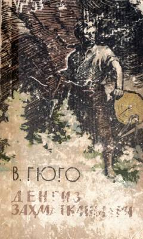

DZInsonning tabiat kuchlari va dengiz stixiyasiga qarshi mardona kurashi haqidagi klassik roman.
Viktor Gyugoning ushbu mashhur romani insonning tabiat kuchlari va dengiz stixiyasiga qarshi kurashini tasvirlaydi. Asar bosh qahramon Jilyatning o'z irodasi va mehnati orqali qiyinchiliklarni yengib o'tishi hamda insoniy fazilatlarni ulug'lashi haqida hikoya qiladi.